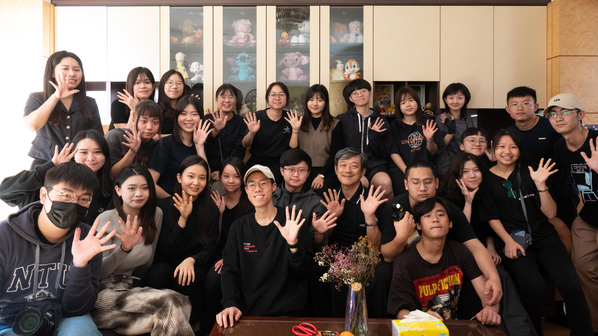
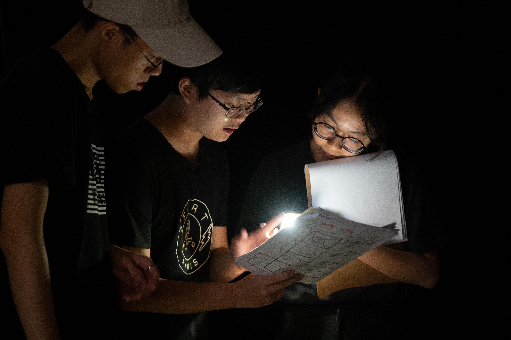
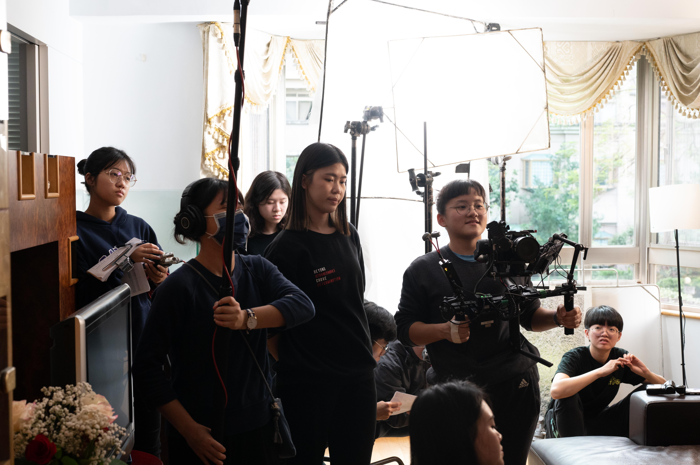
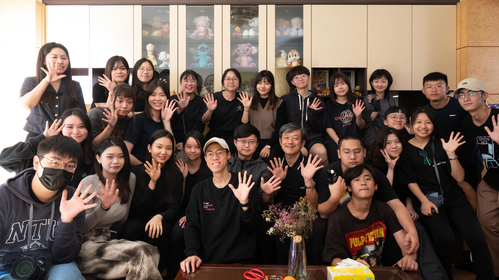
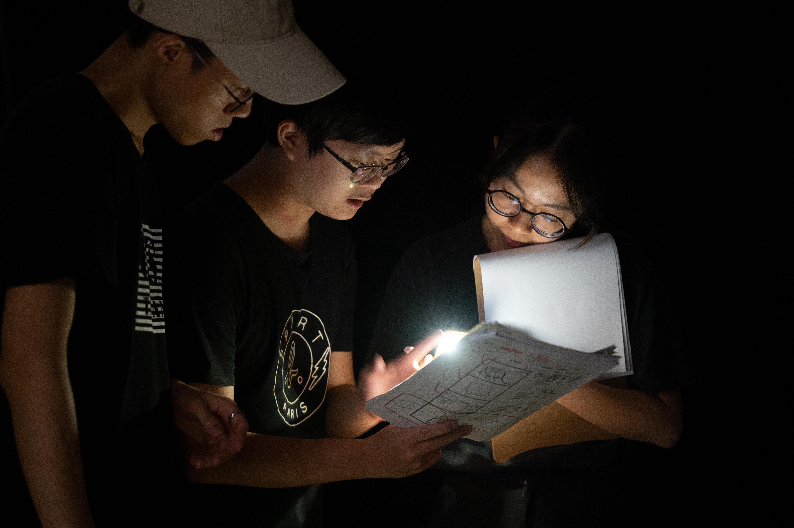
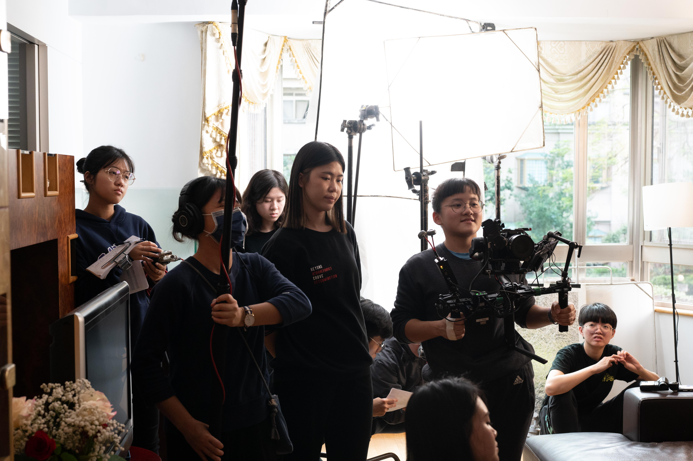

「 最真摯的愛，原來一直都存在。 」
子晴自小幾乎未獲得母親的陪伴，許多人生重大場合母親也從未現身，讓子晴對母親產生芥蒂與不諒解。
然而突如其來的無常造成轉變，而父親的一些舉動，也讓子晴開始有所釋懷......
轉瞬即變的日常，究竟是命運的玩笑、還是饋贈呢？
讓《九號一樓》團隊帶你走進自我的坦承與揭露，看見最真實的自己。

25歲，畢業後北上在行銷公司工作，理性、冷淡、孤僻、把感性情緒藏在內心深處。 「花爛掉就直接丟了，為什麼還要留著？」
點擊圖片查看更多

55 歲，退休在家生活，平時不多言。心中很是掛念遠在台北工作的女兒。
「學插花學這麼久，還是比不上她的水準跟美感呢...」
點擊圖片查看更多

25 歲，子晴室友，畢業後兩人一起到台北工作。個性活潑外向，但也有許多隱藏在內心深處的感受。 「好想等等就去喝一杯！」
點擊圖片查看更多


 




